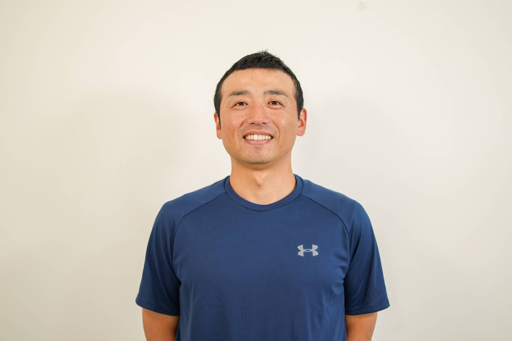
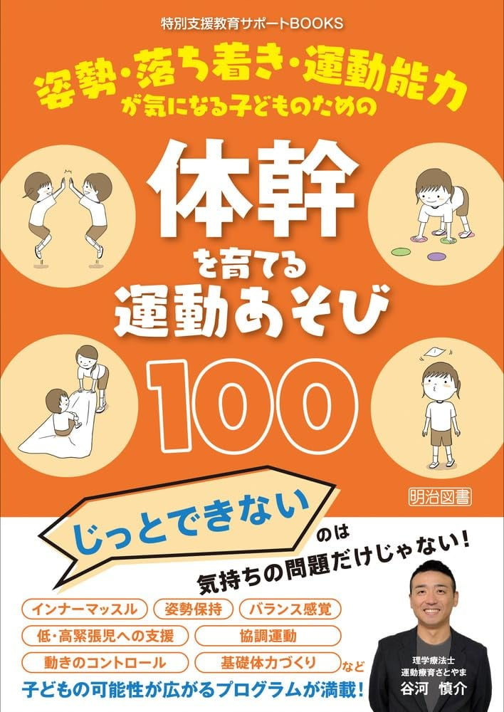

子どもの運動支援に悩む指導員・教育者さんへ。
現場ですぐに使える「一生もののスキル」と「保護者対応」を身につけ、専門性を高める超少人数の認定講座です。
※強引な勧誘は一切ありません。お気軽にご相談ください。
何をしていいか分からない…
「とりあえず身体を動かそう」と感覚で支援していて、これで合っているのか不安。
保護者にうまく説明できない
面談の時、根拠を持って子どもの変化を伝えられず、信頼関係が築けていない気がする。
専門性を高めて自立したい
今の職場で埋もれたくない。ゆくゆくは独立や起業も視野に入れたいけれど、武器がない。
相談できる仲間が欲しい
一人で悩むのはもう限界。同じ志を持った温かいコミュニティで一緒に学びたい。
そのお悩み、私たちが解決します！
過去の私も同じように悩んでいました。だからこそ、現場の支援者に本当に必要な「安心できる学びの場」を作りました。
なんとなくの指導を卒業。子どもの身体の動きを医学的根拠に基づいて正しく見立て、言葉で説明できるようになります。
具体的な根拠をもとに保護者へアプローチを説明できるようになり、「先生にお願いしたい！」と言われる存在になります。
超少人数制のアットホームな空間で学びます。講座終了後もコミュニティとして発展し、いつでも相談できる環境が手に入ります。

理学療法士 / 運動療育さとやま 代表
「なんとなくの支援」から卒業し、子どもの変化を説明できる支援へ。現場の支援者が自信を持って働けるよう、感覚を「言語化」する再現性の高いメソッドを構築。
自身が運営する施設では、稼働率ほぼ100％、見学からの成約率84％という圧倒的な実績を誇り、現場での実践と専門性を掛け合わせた指導には定評がある。
最短4ヶ月！短期集中で取得できます！
現場ですぐに活かせるよう、熱量を保ったまま一気にスキルを身につけます。
オンライン講義 ＋ コースによりリアル会場（対面）
全国どこからでも参加可能。リアル会場で直接熱量を体感することもできます。
超少人数制（定員5名程度）
一人ひとりの悩みに寄り添うため、アットホームな雰囲気を大切にしています。
児童発達支援・放デイの指導員・教育者の方、専門性を高めたい方、将来独立を考えている意欲的な方大歓迎！
感覚・姿勢・ボディイメージなど、運動療育の土台を学びます。
「なぜできないのか？」を整理し、“なんとなく支援”から卒業します。
活動設定・難易度調整・声かけなど、現場で使える支援方法を学びます。
子どもに合わせた“意図のある支援”を実践できるようになります。
ケース相談やフィードバックを通して、支援の精度を高めます。
現場での迷いを減らし、“対応できる力”を身につけます。
保護者説明・職員間共有・振り返りを通して、自分の支援軸を整理します。
「なぜその支援をするのか」を説明できる状態を目指します。
自分のペースで、運動療育の基礎を体系的に学べるコースです。
現場の悩みに伴走する、少人数サポート型コースです。
事業所全体の支援力を高める、現場導入型コースです。
「私の今の現場でも活かせる？」「どんな仲間がいるの？」
些細なことでも構いません。アットホームな雰囲気で、あなたのキャリアの悩みをお伺いします。

個別相談にお申し込みの方全員に！
明治図書より出版された谷河の著書
『体幹を育てる運動あそび100』
を無料でプレゼントいたします！現場ですぐに使えるプログラムが満載です。
ボタンをタップすると公式LINEが開きます。